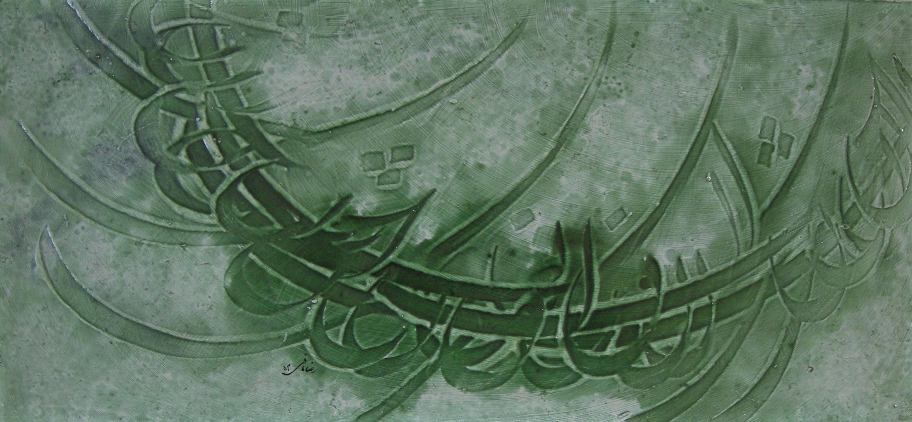

Reza Mafi
1943–1982
Artist Biography
Reza Mafi in 1958 moved to Tehran and in 1964 he began studying calligraphy at the Hossein Mirkhari School there. One of the most celebrated modern Iranian calligraphers and a key figure in the 1970s, Reza Mafi began his artistic career by following the Persian nasta'liq tradition. However, with an avant-garde vision, Mafi soon began experimenting with the 'Calligraphic Painting' style, Naghashi Khat, which had gained significance amongst the calligraphers of the 1960s and 1970s. Imaginatively and without breaking the fundamental rules of Persian calligraphy, Mafi created semi-abstract works on paper and canvas, which quickly caught the attention of the critics. In the late stages of his artistic career, the artist began creating depth in his calligraphic works by layering letters and words. Inspired by the Timurid lustre tiles, with deep carved calligraphic inscriptions and luminous glazes, Mafi introduced a modern version made of polystyrene, often glazed with turquoise, red and other bright colours. Mafi’s work was included in the Iran Modern exhibition in 2013 at the Asia Society in New York.

Untitled, 1974